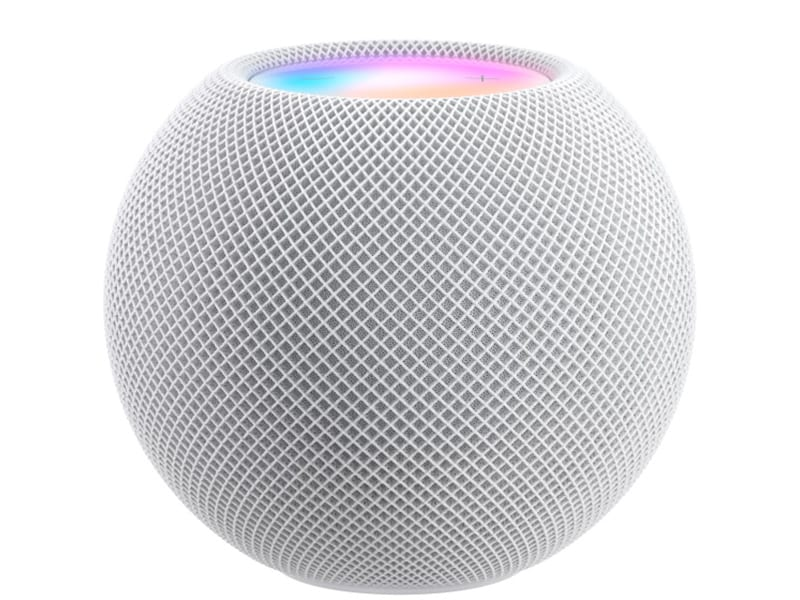

苹果 HomePod（初代）

七单元阵列加 A8 芯片的智能音箱，以自适应调音的高音质取胜。
客观评测
HomePod 内置 4 英寸长冲程低音单元与 7 只号角负载高音单元阵列，每只高音单元配独立功放，由 A8 芯片实时驱动波束成形与多通道均衡，6 麦克风阵列支持远场唤醒。实测低频深沉受控，中频温润，高频细腻，空间感与包围感在单体音箱中罕有对手，空间感知自适应调音效果显著。短板是生态封闭：仅支持 AirPlay 2，安卓设备与部分流媒体服务受限。
主观点评
HomePod 一开口就让人明白苹果的野心：它不追求轰头的低音，而是把乐器与人声一层层铺开，听感干净温润，久听不累，尤其适合放在客厅中央当音乐中心。Siri 的智能程度不及对手，中文服务生态也有限，但论声音，它是同价位少有的高级感。对 iPhone 用户来说，它更像一件顺手的家电，而不是数码玩具。
优点与不足
- 音质在同价位智能音箱中罕有对手，低频深沉受控
- 空间感知调音让任意摆放都能获得均衡听感
- 无缝融入苹果生态，隔空播放体验丝滑
- 仅支持 AirPlay 2，安卓与 Windows 用户基本无缘
- Siri 智能程度与中文服务生态明显落后
- 首发两千余元的定价，性价比一般
参数规格
| 类型 | 智能音箱 |
|---|---|
| 扬声器单元 | 1 只 4 英寸长冲程低音单元 + 7 只号角负载高音单元阵列 |
| 功放 | 低音独立功放 + 7 只高音单元各配独立功放 |
| 处理器 | Apple A8，实时波束成形与多通道均衡 |
| 频响 | 未公布（低频下潜深，高频延展细腻） |
| 连接 | Wi-Fi 802.11ac、蓝牙 5.0、AirPlay 2 |
| 语音助手 | Siri，6 麦克风远场阵列 |
| 特色功能 | 空间感知自动调音、多房间音频、立体声配对 |
| 供电 | AC 电源（内置电源，不可移动使用） |
| 尺寸 | 约 172 × 142 mm（高 × 直径，圆柱形） |
| 重量 | 约 2.5 kg |